How to install MySQL, Phpmyadmin, and MySQLWorkbench on the Virtual Machine.
1. Installed apache2 so that so that we have a server for mysql
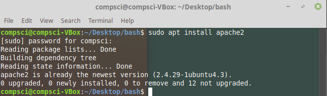
2. Hit space when selecting apache2 and then hitting enter.
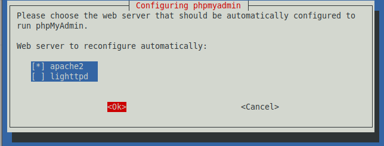
3. Installed mysql-server
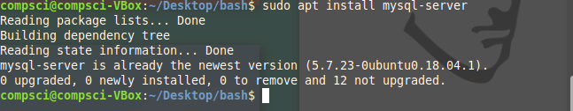
4. Then I had to go through and fully install mysql through their secure installation
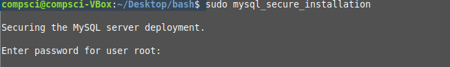
5. Using SUDO, reset the password of root where the *'s are the password
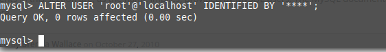
6. Install mysql-workbench
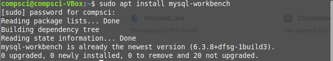
Search your computer for "workbench" and open it
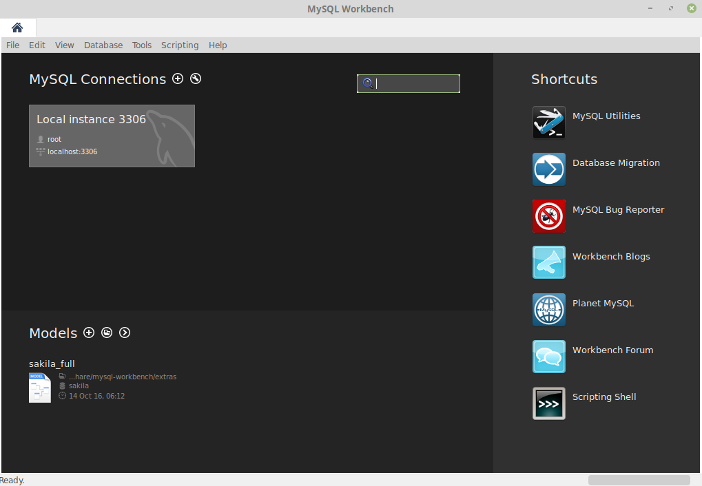
7. Install phpmyadmin.
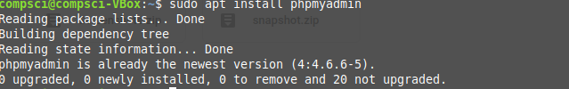
8. Follow the prompts
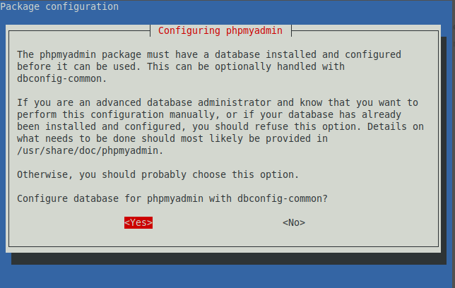
Open a browser and search for: localhost/phpmyadmin
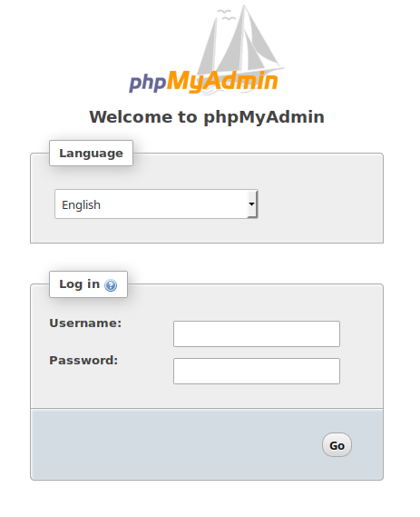
Then login using Username: root Password: toor
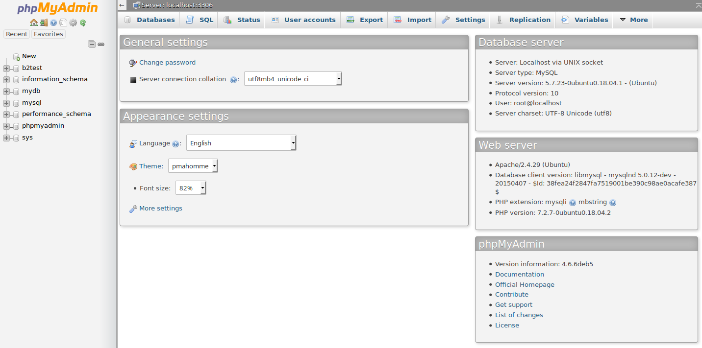